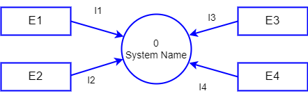
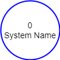
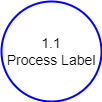
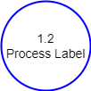
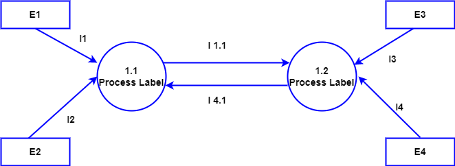

A DFD provides an easy mechanism to identify the flow of data in any
information system. The adjoining simulation illustrates the generic steps to draw a DFD, and some
thumb rules to keep in mind while drawing it.
Data Flow Diagrams
Step
A DFD helps in graphically representing the functional overview of a system.
The follewing are some general steps useful to draw a DFD.
Draw the level 0 DFD.
Draw the higher levels.
• Identify all the external entities.
• Identify what data would be flowing across the system.
• Determine if any data would be stored (retrieved) to (from) the system -- these are the data stores.
All these information are combined together and depicted in the Level 0 DFD.

The direction of the arrows indicate the flow of data.
At the higher levels, a single process is split into multiple subprocesses.




The entities remain the same as in the Level 0 DFD